R/OptimInstanceSingleCrit.R
autoplot.OptimInstanceSingleCrit.RdGenerates plots for bbotk::OptimInstanceSingleCrit.
(character(1)):
Type of the plot. Available choices:
"marginal": scatter plots of x versus y The
colour of the points shows the batch number.
"performance": scatter plots of batch number versus y
"parameter": scatter plots of batch number versus input. The
colour of the points shows the y values.
"parallel" parallel coordinates plot. x values are rescaled by
(x - mean(x)) / sd(x).
"points" - scatter plot of two x dimensions versus y The
colour of the points shows the y values.
"surface": surface plot of two x dimensions versus y values.
The y values are interpolated with the supplied
mlr3::Learner.
"pairs": plots all x and y values against each other.
(character())
Column names of x values. By default, all untransformed
x values from the search space are plotted. Transformed hyperparameters are prefixed with
x_domain_.
(logical(1))
Determines if untransformed (FALSE) or transformed (TRUE)
x values are plotted.
(mlr3::Learner)
Regression learner used to interpolate the data of the surface plot.
(numeric())
Resolution of the surface plot.
(any):
Additional arguments, possibly passed down to the underlying plot functions.
ggplot2::ggplot() object.
if (requireNamespace("bbotk") && requireNamespace("patchwork")) {
library(bbotk)
library(paradox)
fun = function(xs) {
c(y = -(xs[[1]] - 2)^2 - (xs[[2]] + 3)^2 + 10)
}
domain = ps(
x1 = p_dbl(-10, 10),
x2 = p_dbl(-5, 5)
)
codomain = ps(
y = p_dbl(tags = "maximize")
)
obfun = ObjectiveRFun$new(
fun = fun,
domain = domain,
codomain = codomain
)
instance = OptimInstanceSingleCrit$new(objective = obfun, terminator = trm("evals", n_evals = 20))
optimizer = opt("random_search", batch_size = 2)
optimizer$optimize(instance)
# plot y versus batch number
autoplot(instance, type = "performance")
# plot x1 values versus performance
autoplot(instance, type = "marginal", cols_x = "x1")
# plot parallel coordinates plot
autoplot(instance, type = "parallel")
# plot pairs
autoplot(instance, type = "pairs")
}
#> Loading required namespace: bbotk
#> Loading required namespace: patchwork
#> Loading required package: paradox
#> Registered S3 method overwritten by 'GGally':
#> method from
#> +.gg ggplot2
